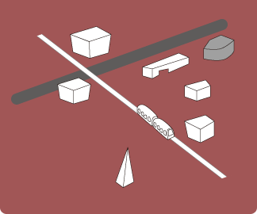
Interface Cultures - Unuselessness - The Useful useless
Linz Art Universityが2004年から提案した修士学位プログラム(MDP: Master's Degree Program)である「Interface Cultures」は、機械とデバイスのコミュニケーションの可能性と不可能性を取り扱ったものです。今回のアルスでは、そのプログラムの参加学生が作品を展示する機会が与えられました。本エキシビションのメインタイトルは 「unuselessness」、すなわち "無用の要"。芸術(Art)と役に立つもの(Useful)は必ずしも調和的な存在ではなく、むしろまったく役に立たないことこそが芸術の持つ側面のひとつで、それらはしばしば互いに対立します。しかし、一見無用と思われる産物が、偶然まったく新しい価値を生むことがある...現代で絶え間なく交わされるコミュニケーション、そこで用いられる様々なインターフェースにもその突然変異が起こり得ます。このエキシビションでは、通常の生活では必要とされない一方で独自の芸術性を内包するような、私たちの生活のなかでも馴染みのあるインターフェースを模した作品が中心に展示されました。

QmusiQ
 乳牛から搾乳したミルクの量を基に自動演奏を行う自動作曲システム。牛のミルクの搾乳量を集計し、そのデータを楽曲に変換して再生する。音色はランダムリーディングで、搾乳量によってBPM(曲の速さ)が変化する。牛は全部で７頭で、それぞれ異なる音色が割り振られており、一斉に全頭のパートを再生することもできる。操作はポインター代わりの指揮棒で行い、モニターに表示されている情報を指すことで操作する。また、牛は妊娠すると搾乳量に変化があるため、妊娠期間や赤ちゃんの生まれた日を示す特殊な線グラフも用意されている。とても日本人では思いつかないであろう、牧養感あふれるアイデアが実現した作品。アーティストの説明いわく「Produce Milk」が本作品の主題であり、その言葉からも牛に対する愛が感じられる、エキセントリックかつ和やかな作品でした。
乳牛から搾乳したミルクの量を基に自動演奏を行う自動作曲システム。牛のミルクの搾乳量を集計し、そのデータを楽曲に変換して再生する。音色はランダムリーディングで、搾乳量によってBPM(曲の速さ)が変化する。牛は全部で７頭で、それぞれ異なる音色が割り振られており、一斉に全頭のパートを再生することもできる。操作はポインター代わりの指揮棒で行い、モニターに表示されている情報を指すことで操作する。また、牛は妊娠すると搾乳量に変化があるため、妊娠期間や赤ちゃんの生まれた日を示す特殊な線グラフも用意されている。とても日本人では思いつかないであろう、牧養感あふれるアイデアが実現した作品。アーティストの説明いわく「Produce Milk」が本作品の主題であり、その言葉からも牛に対する愛が感じられる、エキセントリックかつ和やかな作品でした。
- 牛と音楽の組み合わせが生む独特の雰囲気
- 音は誰でも直感的に楽しむことができる
- 指揮棒でオーケストラの指揮者気分を味わえる
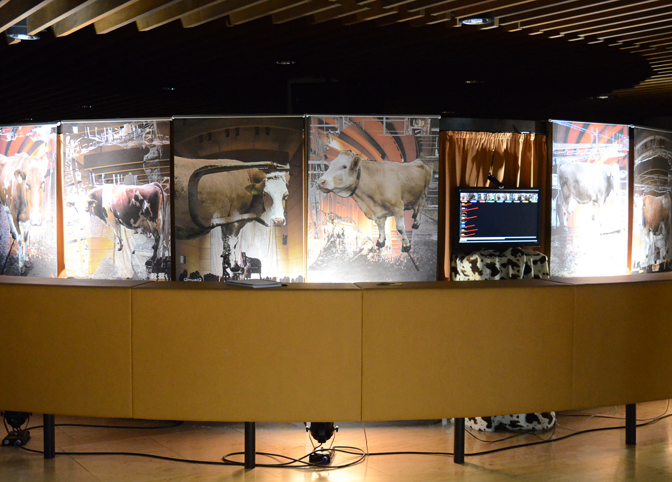

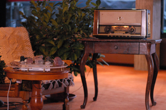
Oma, erzahl mal!
 テーブルに置かれた石はアーティストの祖母が趣味で収集したもの。この石は祖母の思い出そのものであり、言葉以上に多くの思い出を感じ取ることができる。
テーブルに置かれた石はアーティストの祖母が趣味で収集したもの。この石は祖母の思い出そのものであり、言葉以上に多くの思い出を感じ取ることができる。
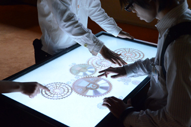
GearBox
 スクリーン上には多彩な歯車(ギア)が配置されており、指でギアを動かすことで音を出すことができる。誰でも直感的に、多人数で操作することができる。
スクリーン上には多彩な歯車(ギア)が配置されており、指でギアを動かすことで音を出すことができる。誰でも直感的に、多人数で操作することができる。
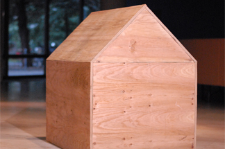
Huis Clos
 家の形をした木製模型をノックすると、遅れて家の内側からノックが返ってくる。自分自身の自我との対話が、ノックというシンプルな手段によって実現されている。
家の形をした木製模型をノックすると、遅れて家の内側からノックが返ってくる。自分自身の自我との対話が、ノックというシンプルな手段によって実現されている。
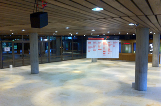
Come with me. Firewalk
 会場の入り口に設置されたサラウンドスピーカーから、炎をイメージした音が断続的に流れていた。館内の雰囲気作りの大黒柱を担っているように感じた。
会場の入り口に設置されたサラウンドスピーカーから、炎をイメージした音が断続的に流れていた。館内の雰囲気作りの大黒柱を担っているように感じた。
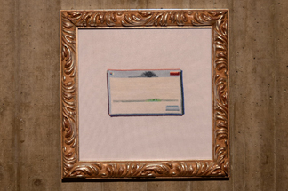
Error Messages
 コンピュータと人のコミュニケーションの結果であるエラーメッセージを、ドットの編み物で表現している。誰もが目にするモチーフをキュートに提示。
コンピュータと人のコミュニケーションの結果であるエラーメッセージを、ドットの編み物で表現している。誰もが目にするモチーフをキュートに提示。
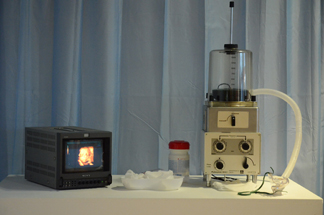
FMR1
 呼吸器を口にあてがって呼吸すると、YouTubeで取得した「子宮内で動く胎児」の動画がディスプレイで再生される。人とデバイスの相互作用を表現している。
呼吸器を口にあてがって呼吸すると、YouTubeで取得した「子宮内で動く胎児」の動画がディスプレイで再生される。人とデバイスの相互作用を表現している。
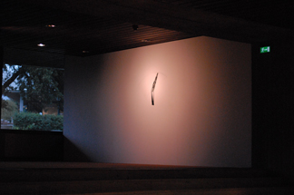
Sight Clearing
 屋外で雨が降り出すと、室内の壁に埋め込まれたワイパーが動き出す。ユニークなアイデアでありながらも、インテリア風の優美さと実用性を兼ね備えている。
屋外で雨が降り出すと、室内の壁に埋め込まれたワイパーが動き出す。ユニークなアイデアでありながらも、インテリア風の優美さと実用性を兼ね備えている。
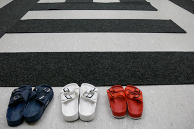
The Will
 イスラムのシンボルとアメリカ国旗を模したスリッパを配置し、両国の軍事的衝突を端的に表現した作品。今回の展示の中でも政治的な視点の作品は珍しい。
イスラムのシンボルとアメリカ国旗を模したスリッパを配置し、両国の軍事的衝突を端的に表現した作品。今回の展示の中でも政治的な視点の作品は珍しい。
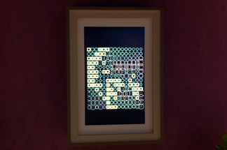
iWilson
 画像をアップロードすると、円と四角をモチーフにしたアートに変換されてしまう作品。デジタルアートの先駆者Mark Wilsonをインスパイアしている。
画像をアップロードすると、円と四角をモチーフにしたアートに変換されてしまう作品。デジタルアートの先駆者Mark Wilsonをインスパイアしている。
リンツでは、アルスに限らず一年を通して数多くの展示会が行われています。その中でも、現代美術センター「OK centrum」で開催されている「HOHENRAUSCH.2」は、アルスのプログラムのひとつである「CYBERARTS 2011」と同じ会場ということもあり、多くの注目を集めていました。
ここでは、「HOHENRAUSCH.2」の展示作品で特に気になったものを紹介します。
※HOHENRAUSCH.2 - Bridges in the sky
OK 〜 ショッピングセンター 〜 Ursulinenhof(旧大聖堂)間を巨大な空中回廊で繋ぎ、自然をテーマとした現代美術作品を多数展示する企画。
開催期間： 2011/5/12〜2011/10/16
Archive - EndangeredWaters
金属の引き戸を開けると、その戸に貼られた滝や海嘯のフィルムに対応した水の音が流れ出す。膨大なアーカイブを「引き戸」というスタイルに置き換え、自然の雄々しさを激しい飛瀑音で表現している。
Nothing
シャボン玉生成マシン。白煙の詰まった巨大なシャボン玉を淡々と放ち続ける。その無機質な見た目と裏腹に、扇風機が丸裸で置かれていたり、来場者がシャボン玉に手を伸ばしていたりと、とてものどかな印象を受けた。
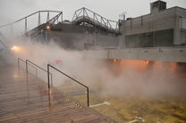
Cloud Parking in Linz
屋上駐車場を霧が包み込み、来場者を圧倒する。人口霧を用いたインスタレーションに長年取り組んでいる中谷芙二子氏ならではの作品。無機質なコンクリートの駐車場と有機的な人工霧の組み合わせに興奮を感じた。